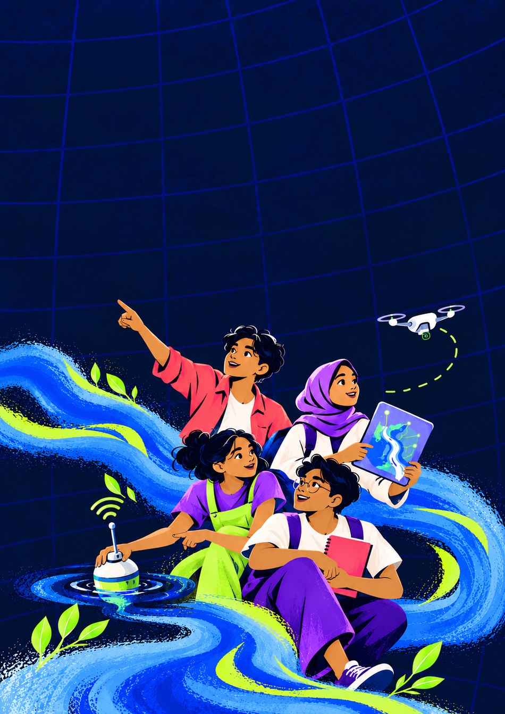
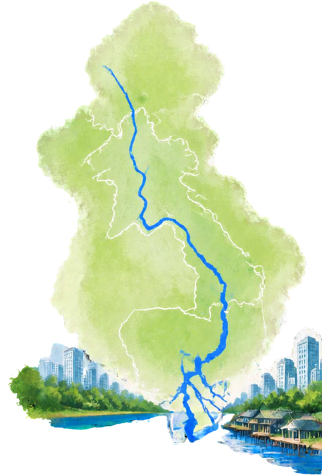
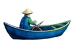
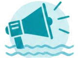
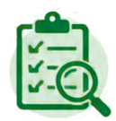
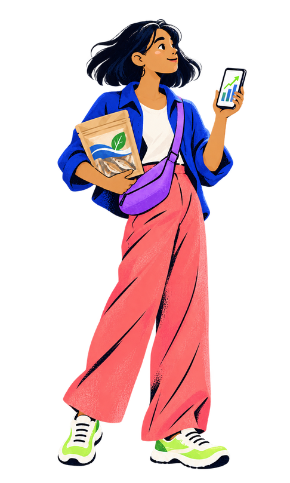

Water & Climate Resilience
- Flood and drought resilience
- Water treatment
- Water efficiency
- Climate-risk services
- Resilient agriculture
Turning Solutions into Sustainable Enterprises
Are you a young founder building a business that could improve the future of the Mekong?
The Riverpreneur Challenge is looking for young founders from Cambodia, Lao PDR, Thailand and Viet Nam who are building businesses that respond to challenges affecting the Mekong River and the people whose livelihoods depend on it.

Overview
A Riverpreneur uses entrepreneurial thinking to develop sustainable solutions for rivers. They see a challenge, understand the people affected and build a product, service or technology that can generate income while benefiting communities and river ecosystems.
A Riverpreneur does not stop at an idea. They test, learn, adapt and turn a promising solution into a viable business.

Lao PDR Thailand Cambodia Viet NamThe Mekong supports food production, jobs, local economies and the wellbeing of millions of people. But the connections between water, food and income are under increasing pressure.
Floods, droughts, changing rainfall, pollution and shifting river conditions are making it harder for farmers, fishers, businesses and communities to plan. These pressures can reduce production, damage equipment and infrastructure, disrupt transport, increase food losses and raise operating costs.
The effects are often greatest for small producers, resource dependent households, women and communities with limited access to information, technology, finance and markets.
Behind every challenge is an unmet need. Riverpreneurs can turn those needs into practical business opportunities.

Solutions
We welcome ventures responding to one or more of the following challenges.
Eligibility
The Challenge is open to a lead applicant who meets all of the following requirements:
Is between 18 and 35 years old.
Is a citizen of the Lower Mekong countries (Cambodia, Lao PDR, Thailand, and Viet Nam).
Is the founder or co-founder of the venture submitted and holds an active leadership and decision-making role.
Leads an early-stage venture that operates or is being piloted in at least one Lower Mekong country and is linked to an eligible focus area.
Can demonstrate that the venture has moved beyond a concept through a prototype, minimum viable product, operating service, customer or community test, early revenue from initial sales, or comparable evidence. Idea only applications are not eligible.
Can personally complete the accelerator, deliver the final pitch and lead a three-month pilot if selected. Other team members may participate, but the eligible founder remains the official applicant.
Submission

Applicants must submit a business proposal of no more than 500 words. The proposal should be clear, specific and based on the applicant’s own venture and experience. It should include:
Explain the selected Mekong challenge, its causes, who is affected and why current responses are insufficient.
Describe the product, service or technology, how it works, who will use it and what makes it practical or different.
Explain the expected benefits for customers, communities, livelihoods or river ecosystems and how the results will be measured.
Identify the target customers, how the venture will generate revenue and any evidence of testing, customer interest or early revenue.
Applicants may use AI tools to check grammar, spelling and sentence clarity, or to refine wording they have written themselves. However, AI must not be used to generate the entire proposal, invent information or produce responses that do not reflect the applicant’s own work and experience. Proposals found to have been generated entirely by AI will be disqualified.
Applicants remain responsible for the originality, accuracy and authenticity of all submitted information.
Submit a video of no more than 60 seconds introducing your venture and proposed solution. The video should cover:
State which Mekong challenge area your venture addresses and briefly explain the specific problem.
Explain what your product, service or technology does, who will use it and what makes it practical or different.
Describe the results you expect, including benefits for customers, communities, livelihoods or the river environment.
Videos may be recorded using a smartphone. Professional production is not required. Use clear sound, adequate lighting and simple language. The founder or co-founder applying to the Challenge should appear and speak in the video.
Applications open 26 October 2026 and close 4 December 2026.
Assessment Criteria
Applications will be reviewed by a judging panel consisting of the MRC representative and external partners.
Assessment criteria may include:

Challenge Journey
The 8 finalists will be invited to the final pitch at the International Conference in Bangkok, Thailand. Travel and accommodation will be covered.
Eco-product, water filter model, farming tool, packaging sample
Mobile app, online platform, dashboard, data tool
Community tourism route, fisheries value chain service, training model
Poster, infographic, business model canvas, impact map
1 minute demonstration video
Participant Benefits

FAQ
Can’t find what you’re looking for? Reach out to the MRC Secretariat using the contact details below.
The term Riverpreneur combines “river” and “entrepreneur”. A Riverpreneur uses entrepreneurial thinking to develop a commercially viable solution that benefits rivers, communities and local economies.
Yes. Students may apply if they meet all eligibility requirements and are already the founder or co-founder of a venture. Being a student alone is not sufficient.
No. The Challenge is intended for ventures that have progressed beyond the idea stage. Applicants must provide evidence such as a prototype, minimum viable product, operating service, customer or community test, first sale or similar result.
Formal registration is not required at the application stage. However, applicants must demonstrate that the venture is active, being tested, has already engaged potential customers, users or communities, and has early revenue from initial sales.
Yes. A team may apply, but it must nominate one eligible founder or co-founder as the official applicant and primary contact. The lead applicant must complete the training, deliver the final pitch and lead the pilot if selected.
Yes. The age requirement applies to the lead applicant. Other team members may be older than 35, provided the official applicant is an eligible founder or co-founder aged between 18 and 35.
Not necessarily. The venture may operate anywhere in Cambodia, Lao PDR, Thailand or Viet Nam. However, its product or service must address a challenge affecting the Lower Mekong Basin and create clear benefits for its people, economy or environment. Applicants must be citizens of one of these four countries.
Yes. A social enterprise is eligible if it has a clear business model, identifies its customers or users and explains how it will generate sufficient revenue to sustain its operations and impact.
Fifteen applicants will be selected for online business training, mentoring and pitch coaching. After refining and resubmitting their business models, eight finalists will be chosen to pitch at the International Conference of the 5th MRC Summit in Bangkok.
Training may cover:
Shortlisted applicants will also receive individual consultation to strengthen their ventures.
The final pitch will take place on 3 April 2027 during the International Conference of the 5th MRC Summit in Bangkok, Thailand.
Yes. The eight finalists will receive funded participation in the International Conference. Details on approved travel, accommodation and related arrangements will be provided to selected finalists.
Four ventures will each receive USD 6,000 in seed funding to implement a three-month pilot. They will also receive follow-up guidance and opportunities to demonstrate the results of their ventures.
No. All eight finalists will pitch at the International Conference, but only four ventures will be selected to receive seed funding.